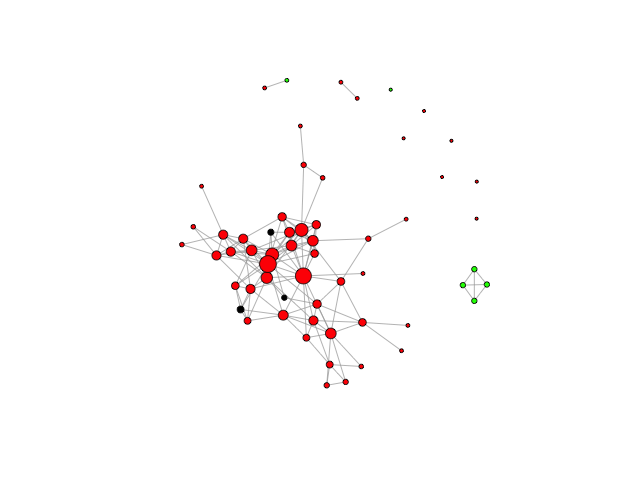
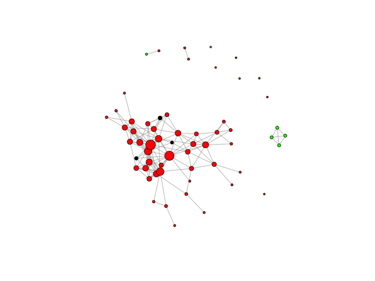

Assignment 7. Visualization
Table of Contents
- 1. Election Forecasting Revisited
- 1.1. Problem 1.1 - Drawing a Map of the US (1 point possible)
- 1.2. Problem 1.2 - Drawing a Map of the US (1 point possible)
- 1.3. Problem 2.1 - Coloring the States by Predictions (2 points possible)
- 1.4. Problem 2.2 - Coloring the States by Predictions (2 points possible)
- 1.5. Problem 2.3 - Coloring the States by Predictions (1 point possible)
- 1.6. Problem 2.4 - Coloring the States by Predictions (1 point possible)
- 1.7. Problem 2.5 - Coloring the States by Predictions (1 point possible)
- 1.8. Problem 3.1 - Understanding the Predictions (1 point possible)
- 1.9. Problem 3.2 - Understanding the Predictions (2 points possible)
- 1.10. Problem 4 - Parameter Settings
- 1.11. Problem 4.1 - Parameter Settings (2/2 points)
- 1.12. Problem 4.2 - Parameter Settings (1 point possible)
- 2. Visualizing Network Data
- 2.1. Problem 1.1 - Summarizing the Data (2 points possible)
- 2.2. Problem 1.2 - Summarizing the Data (1 point possible)
- 2.3. Problem 1.3 - Summarizing the Data (1 point possible)
- 2.4. Problem 2.1 - Creating a Network (1 point possible)
- 2.5. Problem 2.2 - Creating a Network (2 points possible)
- 2.6. Problem 2.3 - Creating a Network (1 point possible)
- 2.7. Problem 2.4 - Creating a Network (2 points possible)
- 2.8. Problem 3.1 - Coloring Vertices (1 point possible)
- 2.9. Problem 3.2 - Coloring Vertices (2 points possible)
- 2.10. Problem 3.3 - Coloring Vertices (2 points possible)
- 2.11. Problem 4 - Other Plotting Options (2 points possible)
Unit 7 Visualization assignment of The Analytical Edge course from MIT.
1 Election Forecasting Revisited
In the recitation from Unit 3, we used logistic regression on polling data in order to construct US presidential election predictions. We separated our data into a training set, containing data from 2004 and 2008 polls, and a test set, containing the data from 2012 polls. We then proceeded to develop a logistic regression model to forecast the 2012 US presidential election.
In this homework problem, we'll revisit our logistic regression model from Unit 3, and learn how to plot the output on a map of the United States. Unlike what we did in the Crime lecture, this time we'll be plotting predictions rather than data!
First, load the ggplot2, maps, and ggmap packages using the
library function. All three packages should be installed on your
computer from lecture, but if not, you may need to install them too
using the install.packages function.
writeLines("\n :: Loading the necessary libraries...") library(ggplot2) library(maps) library(ggmap)
:: Loading the necessary libraries...
Then, load the US map and save it to the variable statesMap, like we did during the Crime lecture:
statesMap = map_data("state")
writeLines("\n :: Load the US map in R...") statesMap <- map_data("state")
:: Load the US map in R...
The maps package contains other built-in maps, including a US county map, a world map, and maps for France and Italy.
1.1 Problem 1.1 - Drawing a Map of the US (1 point possible)
If you look at the structure of the statesMap data frame using the str
function, you should see that there are 6 variables. One of the
variables, group, defines the different shapes or polygons on the
map. Sometimes a state may have multiple groups, for example, if it
includes islands.
writeLines("\n :: Showing the structure of stateMap:")
str(statesMap)
:: Showing the structure of stateMap: 'data.frame': 15537 obs. of 6 variables: $ long : num -87.5 -87.5 -87.5 -87.5 -87.6 ... $ lat : num 30.4 30.4 30.4 30.3 30.3 ... $ group : num 1 1 1 1 1 1 1 1 1 1 ... $ order : int 1 2 3 4 5 6 7 8 9 10 ... $ region : chr "alabama" "alabama" "alabama" "alabama" ... $ subregion: chr NA NA NA NA ...
1.1.1 Question
How many different groups are there?
writeLines("\n :: The number of groups:") str(factor(statesMap$group)) writeLines("\n :: Another useful way:") table(statesMap$group) writeLines("\n :: Yet another way to calculate:") length(table(statesMap$group))
:: The number of groups: Factor w/ 63 levels "1","2","3","4",..: 1 1 1 1 1 1 1 1 1 1 ... :: Another useful way: 1 2 3 4 5 6 7 8 9 10 11 12 13 14 15 16 202 149 312 516 79 91 94 10 872 381 233 329 257 256 113 397 17 18 19 20 21 22 23 24 25 26 27 28 29 30 31 32 650 399 566 36 220 30 460 370 373 382 315 238 208 70 125 205 33 34 35 36 37 38 39 40 41 42 43 44 45 46 47 48 78 16 290 21 168 37 733 12 105 238 284 236 172 66 304 166 49 50 51 52 53 54 55 56 57 58 59 60 61 62 63 289 1088 59 129 96 15 623 17 17 19 44 448 373 388 68 :: Yet another way to calculate: [1] 63
1.1.1.1 Answer
63
Explanation
You can count the number of different values of the group variable by
using the command table(statesMap$group). There are \(63\) different
values.
Alternatively, you could use the command
length(table(statesMap$group))
as a shortcut to counting the number of groups in the table output.
The variable order defines the order to connect the points within
each group, and the variable region gives the name of the state.
1.2 Problem 1.2 - Drawing a Map of the US (1 point possible)
You can draw a map of the United States by typing the following in your R console:

Figure 1: United States map in R
We specified two colors in geom_polygon – fill and color. Which
one defined the color of the outline of the states?
1.2.1 Answer
[ ]fill[X]color color - correct[ ]Neither
Explanation
In our plot, the states are outlined in black, which is the color we
specified for the option color. To confirm that this is changing the
outline color of the states, you can try re-running the command with a
different color:
Figure 2: United States map in other outline color
1.3 Problem 2.1 - Coloring the States by Predictions (2 points possible)
Now, let's color the map of the US according to our 2012 US
presidential election predictions from the Unit 3 Recitation. We'll
rebuild the model here, using the dataset PollingImputed.csv. Be sure
to use this file so that you don't have to redo the imputation to fill
in the missing values, like we did in the Unit 3 Recitation.
library(parallel) if(!file.exists("../data")) { dir.create("../data") } fileUrl <- "https://courses.edx.org/asset-v1:MITx+15.071x_2a+2T2015+type@asset+block/PollingImputed.csv" fileName <- "PollingImputed.csv" dataPath <- "../data" filePath <- paste(dataPath, fileName, sep = "/") if(!file.exists(filePath)) { download.file(fileUrl, destfile = filePath, method = "curl") } writeLines("\n :: File downloaded...")
:: File downloaded...
Load the data using the read.csv function, and call it polling. Then
split the data using the subset function into a training set called
Train that has observations from 2004 and 2008, and a testing set
called Test that has observations from 2012.
writeLines(" Loading the imputed data into their data frame.") polling <- read.table("../data/PollingImputed.csv", sep = ",", header = TRUE) str(polling) table(polling$Year) summary(polling)
Loading the imputed data into their data frame.
'data.frame': 145 obs. of 7 variables:
$ State : Factor w/ 50 levels "Alabama","Alaska",..: 1 1 2 2 3 3 3 4 4 4 ...
$ Year : int 2004 2008 2004 2008 2004 2008 2012 2004 2008 2012 ...
$ Rasmussen : int 11 21 19 16 5 5 8 7 10 13 ...
$ SurveyUSA : int 18 25 21 18 15 3 5 5 7 21 ...
$ DiffCount : int 5 5 1 6 8 9 4 8 5 2 ...
$ PropR : num 1 1 1 1 1 ...
$ Republican: int 1 1 1 1 1 1 1 1 1 1 ...
2004 2008 2012
50 50 45
State Year Rasmussen SurveyUSA
Arizona : 3 Min. :2004 Min. :-41.000 Min. :-33.000
Arkansas : 3 1st Qu.:2004 1st Qu.:-10.000 1st Qu.:-11.000
California : 3 Median :2008 Median : 3.000 Median : 1.000
Colorado : 3 Mean :2008 Mean : 2.048 Mean : 1.359
Connecticut: 3 3rd Qu.:2012 3rd Qu.: 12.000 3rd Qu.: 16.000
Florida : 3 Max. :2012 Max. : 39.000 Max. : 30.000
(Other) :127
DiffCount PropR Republican
Min. :-19.000 Min. :0.0000 Min. :0.0000
1st Qu.: -6.000 1st Qu.:0.0000 1st Qu.:0.0000
Median : 1.000 Median :0.6250 Median :1.0000
Mean : -1.269 Mean :0.5259 Mean :0.5103
3rd Qu.: 4.000 3rd Qu.:1.0000 3rd Qu.:1.0000
Max. : 11.000 Max. :1.0000 Max. :1.0000
Splitting the dataset in two data frames Train and Test data frames.
writeLines("\n :: Subset data into training set and test set") Train <- subset(polling, Year == 2004 | Year == 2008) Test <- subset(polling, Year == 2012)
:: Subset data into training set and test set
Note that we only have 45 states in our testing set, since we are missing observations for Alaska, Delaware, Alabama, Wyoming, and Vermont, so these states will not appear colored in our map.
writeLines("\n :: Revising the Testing data frame structure:")
str(Test)
:: Revising the Testing data frame structure: 'data.frame': 45 obs. of 7 variables: $ State : Factor w/ 50 levels "Alabama","Alaska",..: 3 4 5 6 7 9 10 11 12 13 ... $ Year : int 2012 2012 2012 2012 2012 2012 2012 2012 2012 2012 ... $ Rasmussen : int 8 13 -12 3 -7 2 5 -22 31 -22 ... $ SurveyUSA : int 5 21 -14 -2 -13 0 8 -24 24 -16 ... $ DiffCount : int 4 2 -6 -5 -8 6 4 -2 1 -5 ... $ PropR : num 0.833 1 0 0.308 0 ... $ Republican: int 1 1 0 0 0 0 1 0 1 0 ...
Then, create a logistic regression model and make predictions on the test set using the following commands:
writeLines("\n :: Creating the Logistic Regression model...") mod2 <- glm(Republican ~ SurveyUSA + DiffCount, data = Train, family = "binomial") writeLines("\n :: Making preditions from Testing data set...") TestPrediction <- predict(mod2, newdata = Test, type = "response")
:: Creating the Logistic Regression model... :: Making preditions from Testing data set...
TestPrediction gives the predicted probabilities for each state, but
let's also create a vector of Republican/Democrat predictions by using
the following command:
writeLines("\n :: Creting binary preditions with a threshold of 50%...") TestPredictionBinary <- as.numeric(TestPrediction > 0.5)
:: Creting binary preditions with a threshold of 50%...
Now, put the predictions and state labels in a data.frame so that we
can use ggplot:
writeLines("\n :: New data frame for plotting purposes...") predictionDataFrame <- data.frame(TestPrediction, TestPredictionBinary, Test$State)
:: New data frame for plotting purposes...
To make sure everything went smoothly, answer the following questions.
1.3.1 Question a
For how many states is our binary prediction 1 (for 2012), corresponding to Republican?
writeLines("\n :: Number of states with TestPredictionbinary == 1:")
nrow(subset(predictionDataFrame, predictionDataFrame$TestPredictionBinary == 1))
:: Number of states with TestPredictionbinary == 1: [1] 22
1.3.1.1 Answer
22
1.3.2 Question
What is the average predicted probability of our model (on the Test set, for 2012)?
writeLines("\n :: The average predicted probability of our model:")
mean(predictionDataFrame$TestPrediction)
:: The average predicted probability of our model: [1] 0.4852626
1.3.2.1 Answer
0.4852626
Explanation
You can create the data frame predictionDataFrame by running the following lines of R code:
polling = read.csv("PollingImputed.csv")
Train = subset(polling, Year < 2012)
Test = subset(polling, Year == 2012)
mod2 = glm(Republican~SurveyUSA+DiffCount, data=Train, family="binomial")
TestPrediction = predict(mod2, newdata=Test, type="response")
TestPredictionBinary = as.numeric(TestPrediction > 0.5)~
predictionDataFrame = data.frame(TestPrediction, TestPredictionBinary, Test$State)
You can answer the two questions with the functions
table(TestPredictionBinary) and mean(TestPrediction).
1.4 Problem 2.2 - Coloring the States by Predictions (2 points possible)
Now, we need to merge predictionDataFrame with the map data
statesMap, like we did in lecture. Before doing so, we need to
convert the Test.State variable to lowercase, so that it matches the
region variable in statesMap. Do this by typing the following in your
R console:
writeLines("\n :: convert the Test.State variable to lowercase...") predictionDataFrame$region <- tolower(predictionDataFrame$Test.State)
:: convert the Test.State variable to lowercase...
Now, merge the two data frames using the following command:
writeLines("\n :: Merging the two data frames...") predictionMap <- merge(statesMap, predictionDataFrame, by = "region")
:: Merging the two data frames...
Lastly, we need to make sure the observations are in order so that the map is drawn properly, by typing the following:
writeLines("\n :: Ordering the map data...") predictionMap <- predictionMap[order(predictionMap$order),]
:: Ordering the map data...
1.4.1 Question
How many observations are there in predictionMap?
1.4.1.1 Answer
writeLines("\n :: Number of observations in the predition map:")
nrow(predictionMap)
:: Number of observations in the predition map: [1] 15034
1.4.2 Question
How many observations are there in statesMap?
1.4.2.1 Answer
writeLines("\n :: Number of observations in the states map:")
nrow(statesMap)
:: Number of observations in the states map: [1] 15537
Explanation
If you type str(predictionMap), you should see that there are \(15034\)
observations, and if you type str(statesMap) you should see that there
are \(15537\) observations.
1.5 Problem 2.3 - Coloring the States by Predictions (1 point possible)
When we merged the data in the previous problem, it caused the number of observations to change. Why? Check out the help page for merge by typing ?merge to help you answer this question.
1.5.1 Answer
[ ]Merging the data just combines the two data frames like it would if we used rbind, so the number of observations increased.[ ]We have more observations for each state now, because some observations have the statesMap data, and some observations have the prediction data.[X]Because we only make predictions for 45 states, we no longer have observations for some of the states. These observations were removed in the merging process.[ ]We merged the observations for which our predictions are identical.
Explanation
When we merge data, it only merged the observations that exist in both
data sets. So since we are merging based on the region variable, we
will lose all observations that have a value of region that doesn't
exist in both data frames.
You can change this default behavior by using the all.x and all.y
arguments of the merge function. For more information, look at the
help page for the merge function by typing ?merge in your R console.
1.6 Problem 2.4 - Coloring the States by Predictions (1 point possible)
Now we are ready to color the US map with our predictions! You can color the states according to our binary predictions by typing the following in your R console:

Figure 3: US Presidential predictions map v1
The states appear light blue and dark blue in this map. Which color represents a Republican prediction?
1.6.1 Answer
[X]Light blue[ ]Dark blue
Explanation
Our logistic regression model assigned \(1\) to Republican and \(0\) to Democrat. As we can see from the legend, \(1\) corresponds to a light blue color on the map and \(0\) corresponds to a dark blue color on the map.
1.7 Problem 2.5 - Coloring the States by Predictions (1 point possible)
We see that the legend displays a blue gradient for outcomes between \(0\) and \(1\). However, when plotting the binary predictions there are only two possible outcomes: \(0\) or \(1\). Let's replot the map with discrete outcomes. We can also change the color scheme to blue and red, to match the blue color associated with the Democratic Party in the US and the red color associated with the Republican Party in the US. This can be done with the following command:

Figure 4: US presidential election map v2
Alternatively, we could plot the probabilities instead of the binary
predictions. Change the plot command above to instead color the
states by the variable TestPrediction. You should see a gradient of
colors ranging from red to blue. Do the colors of the states in
the map for TestPrediction look different from the colors of the
states in the map with TestPredictionBinary? Why or why not?
NOTE: If you have a hard time seeing the red/blue gradient, feel free
to change the color scheme, by changing the arguments ~low = "blue"~ and
~high = "red"~ to colors of your choice (to see all of the color options
in R, type colors() in your R console). You can even change it to a
gray scale, by changing the low and high colors to gray and
black.
Figure 5: US Presidential Election map v3
1.7.1 Answer
[X]The two maps look very similar. This is because most of our predicted probabilities are close to 0 or close to 1. The two maps look very similar. This is because most of our predicted probabilities are close to 0 or close to 1. - correct[ ]The two maps look very similar. This is becauseTestPredictionand TestPredictionBinary have the exact same values.[ ]The two maps look very different. This is because we have switched from plotting discrete values to plotting continuous values.[ ]The two maps look very different. This is because our predicted probabilites have a wide range of values, and we were not sure about many states.
Explanation
This plot can be generated by using the command:
ggplot(predictionMap, aes(x = long, y = lat, group = group, fill =
TestPrediction)) + geom_polygon(color = "black") +
scale_fill_gradient(low = "blue", high = "red", name = "Prediction
2012")
The only state that appears purple (the color between red and
blue) is the state of Iowa, so the maps look very similar. If you
take a look at TestPrediction, you can see that most of our
predicted probabilities are very close to \(0\) or very close to \(1\). In
fact, we don't have a single predicted probability between \(0.065\) and
\(0.93\).
1.8 Problem 3.1 - Understanding the Predictions (1 point possible)
In the 2012 election, the state of Florida ended up being a very close race. It was ultimately won by the Democratic party. Did we predict this state correctly or incorrectly? To see the names and locations of the different states, take a look at the World Atlas map here.
1.8.1 Answer
[ ]We correctly predicted that this state would be won by the Democratic party.[X]We incorrectly predicted this state by predicting that it would be won by the Republican party.
Explanation
In our prediction map, the state of Florida is colored red, meaning that we predicted Republican. So we incorrectly predicted this state.
1.9 Problem 3.2 - Understanding the Predictions (2 points possible)
1.9.1 Question a
What was our predicted probability for the state of Florida?
1.9.1.1 Answer
writeLines("\n :: The predicted probability for Florida:") head(predictionMap[predictionMap$region == "florida", ], 1)
:: The predicted probability for Florida:
region long lat group order subregion TestPrediction
1150 florida -85.01548 30.99702 9 1462 <NA> 0.9640395
TestPredictionBinary Test.State
1150 1 Florida
Predicted probability: \(0.9640395\)
1.9.2 Question b
What does this imply?
1.9.2.1 Answer
[ ]Our prediction model did a good job of correctly predicting the state of Florida, and we were very confident in our prediction.[ ]Our prediction model did a good job of correctly predicting the state of Florida, but we were not very confident in the prediction.[ ]Our prediction model did not do a very good job of correctly predicting the state of Florida, but we were not very confident in our prediction.[X]Our prediction model did not do a very good job of correctly predicting the state of Florida, and we were very confident in our incorrect prediction.
Explanation
We predicted Republican for the state of Florida with high probability, meaning that we were very confident in our incorrect prediction! Historically, Florida is usually a close race, but our model doesn't know this. The model only uses polling results for the particular year. For Florida in 2012, Survey USA predicted a tie, but other polls predicted Republican, so our model predicted Republican.
1.10 Problem 4 - Parameter Settings
In this part, we'll explore what the different parameter settings of
geom_polygon do. Throughout the problem, use the help page for
geom_polygon, which can be accessed by ?geom_polygon. To see more
information about a certain parameter, just type a question mark and
then the parameter name to get the help page for that
parameter. Experiment with different parameter settings to try and
replicate the plots!
We'll be asking questions about the following three plots:
Plot (1)

Plot (2)

Plot (3)
1.10.1 Answer
Recreating plot (1)
Figure 9: Recreating plot 1
Now we will recreate the Plot (2)

Figure 10: Recreating the plot 2
Now let recreate the plot (3)

Figure 11: Recreating the plot 3
1.11 Problem 4.1 - Parameter Settings (2/2 points)
Plots (1) and (2) were created by setting different parameters of geom_polygon to the value 3.
1.11.1 Question
What is the name of the parameter we set to have value 3 to create plot (1)?
1.11.1.1 Answer
linetype
1.11.2 Question
What is the name of the parameter we set to have value 3 to create plot (2)?
1.11.2.1 Answer
size
Explanation
The first plot can be generated by setting the parameter linetype=3:
ggplot(predictionMap, aes(x = long, y = lat, group = group, fill =
TestPrediction))+
geom_polygon(color = "black", linetype=3) +
scale_fill_gradient(low = "blue", high = "red", guide
= "legend", breaks = c(0,1), labels = c("Democrat", "Republican") , name
= "Prediction 2012")
The second plot can be generated by setting the parameter size = 3:
ggplot(predictionMap, aes(x = long, y = lat, group = group, fill =
TestPrediction))+ geom_polygon(color = "black", size=3) +
scale_fill_gradient(low = "blue", high = "red", guide
= "legend", breaks= c(0,1), labels = c("Democrat", "Republican"),name
= "Prediction 2012")
1.12 Problem 4.2 - Parameter Settings (1 point possible)
1.12.1 Question
Plot (3) was created by changing the value of a different geom_polygon parameter to have value 0.3. Which parameter did we use?
1.12.1.1 Answer
alpha
Explanation
Plot (3) can be created by changing the alpha parameter:
ggplot(predictionMap, aes(x = long, y = lat, group = group, fill =
TestPrediction))+ geom_polygon(color = "black", alpha=0.3) +
scale_fill_gradient(low = "blue", high = "red", guide
= "legend", breaks= c(0,1), labels = c("Democrat", "Republican"),name
= "Prediction 2012")
The alpha parameter controls the transparency or darkness of the
color. A smaller value of alpha will make the colors lighter.
2 Visualizing Network Data
The cliche goes that the world is an increasingly interconnected
place, and the connections between different entities are often best
represented with a graph. Graphs are comprised of vertices (also often
called "nodes") and edges connecting those nodes. In this assignment,
we will learn how to visualize networks using the igraph package in
R.
For this assignment, we will visualize social networking data using anonymized data from Facebook; this data was originally curated in a recent paper about computing social circles in social networks. In our visualizations, the vertices in our network will represent Facebook users and the edges will represent these users being Facebook friends with each other.
The first file we will use, edges.csv, contains variables V1 and V2,
which label the endpoints of edges in our network. Each row represents
a pair of users in our graph who are Facebook friends. For a pair of
friends A and B, edges.csv will only contain a single row – the
smaller identifier will be listed first in this row. From this row, we
will know that A is friends with B and B is friends with A.
The second file, users.csv, contains information about the Facebook users, who are the vertexes in our network. This file contains the following variables:
- id: A unique identifier for this user; this is the value that
appears in the rows of
edges.csv - gender: An identifier for the gender of a user taking the values A and B. Because the data is anonymized, we don't know which value refers to males and which value refers to females.
- school: An identifier for the school the user attended taking the values A and AB (users with AB attended school A as well as another school B). Because the data is anonymized, we don't know the schools represented by A and B.
- locale: An identifier for the locale of the user taking the values A and B. Because the data is anonymized, we don't know which value refers to what locale.
library(parallel) if(!file.exists("../data")) { dir.create("../data") } fileUrl <- c("https://courses.edx.org/asset-v1:MITx+15.071x_2a+2T2015+type@asset+block/edges.csv", "https://courses.edx.org/asset-v1:MITx+15.071x_2a+2T2015+type@asset+block/users.csv") fileName <- c("edges.csv", "users.csv") dataPath <- "../data" for(i in 1:2) { filePath <- paste(dataPath, fileName[i], sep = "/") if(!file.exists(filePath)) { download.file(fileUrl[i], destfile = filePath, method = "curl") } } writeLines("\n :: Files downloaded...")
:: Files downloaded...
2.1 Problem 1.1 - Summarizing the Data (2 points possible)
Load the data from edges.csv into a data frame called edges, and load
the data from users.csv into a data frame called users.
writeLines("\n :: Loading the data sets in dataframes...") edges <- read.csv("../data/edges.csv", na.strings = "") users <- read.csv("../data/users.csv", na.strings = "") writeLines("\n :: Revising the edges dataframe structure:") str(edges) writeLines("\n :: Revising the users dataframe structure:") str(users)
:: Loading the data sets in dataframes... :: Revising the edges dataframe structure: 'data.frame': 146 obs. of 2 variables: $ V1: int 4019 4023 4023 4027 3988 3982 3994 3998 3993 3982 ... $ V2: int 4026 4031 4030 4032 4021 3986 3998 3999 3995 4021 ... :: Revising the users dataframe structure: 'data.frame': 59 obs. of 4 variables: $ id : int 3981 3982 3983 3984 3985 3986 3987 3988 3989 3990 ... $ gender: Factor w/ 2 levels "A","B": 1 2 2 2 2 2 1 2 2 1 ... $ school: Factor w/ 2 levels "A","AB": 1 NA NA NA NA 1 NA NA 1 NA ... $ locale: Factor w/ 2 levels "A","B": 2 2 2 2 2 2 1 2 2 1 ...
2.1.1 Question a
How many Facebook users are there in our dataset?
2.1.1.1 Answer
59
Explanation
From str(users) or nrow(users), we see that there are 59 Facebook
users in this dataset.
2.1.2 Question b
In our dataset, what is the average number of friends per user? Hint: this question is tricky, and it might help to start by thinking about a small example with two users who are friends.
2.1.2.1 Answer
writeLines("\n :: Number of frienship relationships:") nrow(edges) writeLines("\n :: Number of users:") nrow(users) writeLines("\n :: Average number of friends per user:") (2 * nrow(edges)) / nrow(users)
:: Number of frienship relationships: [1] 146 :: Number of users: [1] 59 :: Average number of friends per user: [1] 4.949153
Explanation
From str(edges) or nrow(edges), we see that there are $146 pairs
of users in our dataset who are Facebook friends. However, each pair
\((A, B)\) must be counted twice, because \(B\) is a friend of \(A\) and \(A\)
is a friend of \(B\). To think of this in simpler terms, consider a
network with just new people, \(A\) and \(B\), and a single edge \((A,
B)\). Even though there are two vertexes and one edge, each user has on
average one friend.
For our network, the average number of friends per user is
$$ \frac{292}{59} = 4.95 $$
Finally, note that in all likelihood these users have a much higher number of Facebook friends. We are computing here the average number of people in this dataset who are their friends, instead of the average total number of Facebook friends.
2.2 Problem 1.2 - Summarizing the Data (1 point possible)
2.2.1 Question
Out of all the students who listed a school, what was the most common locale?
2.2.1.1 Answer
writeLines("\n :: the most common locale for students who listed a school:") subset(users, users$school == "A" | users$school == "AB") writeLines("\n :: Other way to answer:") table(users$locale, users$school)
:: the most common locale for students who listed a school:
id gender school locale
1 3981 A A B
6 3986 B A B
9 3989 B A B
11 3991 B A B
12 3992 A A B
16 594 B A B
20 3999 B AB B
23 4002 B A B
26 4005 B A B
31 4010 B A B
39 4018 A A B
40 4019 B A B
41 4020 <NA> A B
42 4021 B A B
44 4023 B A B
49 4028 B A B
52 4031 B A B
55 4034 B A B
57 4036 A AB B
:: Other way to answer:
A AB
A 0 0
B 17 2
[ ]Locale A[X]Locale B
Explanation
From table(users$locale, users$school), we read that all students
listed at schools \(A\) and \(B\) listed their locale as \(B\).
2.3 Problem 1.3 - Summarizing the Data (1 point possible)
Is it possible that either school A or B is an all-girls or all-boys school?
2.3.1 Answer
writeLines("\n :: Exploratory analysis of the data frame:") head(users, 20) writeLines("\n :: Are all students of the same gender in some school?") table(users$school, users$gender)
:: Exploratory analysis of the data frame:
id gender school locale
1 3981 A A B
2 3982 B <NA> B
3 3983 B <NA> B
4 3984 B <NA> B
5 3985 B <NA> B
6 3986 B A B
7 3987 A <NA> A
8 3988 B <NA> B
9 3989 B A B
10 3990 A <NA> A
11 3991 B A B
12 3992 A A B
13 3993 B <NA> <NA>
14 3994 A <NA> B
15 3995 B <NA> B
16 594 B A B
17 3996 B <NA> B
18 3997 B <NA> B
19 3998 B <NA> B
20 3999 B AB B
:: Are all students of the same gender in some school?
A B
A 3 13
AB 1 1
[X]No No - correct[ ]Yes
Explanation
We see from table(users$gender, users$school) that both genders \(A\)
and \(B\) have attended schools \(A\) and \(B\).
2.4 Problem 2.1 - Creating a Network (1 point possible)
We will be using the igraph package to visualize networks; install
and load this package using the install.packages and library
commands.
We can create a new graph object using the graph.data.frame()
function. Based on ?graph.data.frame, which of the following
commands will create a graph g describing our social network, with
the attributes of each user correctly loaded?
Note: A directed graph is one where the edges only go one way – they point from one vertex to another. The other option is an undirected graph, which means that the relations between the vertexes are symmetric.
2.4.1 Answer
writeLines("\n :: Install new package: igraph ...") ## install.packages('igraph', repos='http://cran.rstudio.com/') writeLines("\n :: NOTE: Please comment after install once...") library(igraph) writeLines("\n :: Library igraph loaded...")
:: Install new package: igraph ... :: NOTE: Please comment after install once... :: Library igraph loaded...
[ ]g = graph.data.frame(edges, FALSE, users)[ ]g = graph.data.frame(users, FALSE, edges)[ ]g = graph.data.frame(edges, TRUE, users)[ ]g = graph.data.frame(users, TRUE, edges)
g1 <- graph.data.frame(edges, FALSE, users) ## g2 <- graph.data.frame(users, FALSE, edges) g3 <- graph.data.frame(edges, TRUE, users) ## g4 <- graph.data.frame(users, TRUE, edges) writeLines("\n :: Our undirected graph g1:") g1
:: Our undirected graph g1: attr: name (v/c), gender (v/c), school (v/c), locale (v/c) + edges (vertex names): [1] 4019--4026 4023--4031 4023--4030 4027--4032 3988--4021 3982--3986 [7] 3994--3998 3998--3999 3993--3995 3982--4021 3982--4037 3997--4019 [13] 3994--4019 3992--4017 3981--3998 3997--4018 4009--4030 3994--4018 [19] 3995--4000 4000--4026 4027--4038 4031--4038 4000--4021 3986--4030 [25] 3985--4014 3994--4030 3998--4021 3994--4009 3982--4023 3998--4019 [31] 4020--4031 4009--4023 3994--3997 3981--4023 3997--4030 3997--4021 [37] 4023--4034 3993--4004 3994--3996 4000--4030 3998--4014 4004--4013 [43] 4016--4025 3990--4016 3999--4005 4004--4023 4002--4020 3998--4018 + ... omitted several edges
Explanation
From ?graph.data.frame, we can see that the function expects the
first two columns of parameter d to specify the edges in the graph –
our edges object fits this description.
Our edges are undirected – if \(A\) is a Facebook friend of \(B\) then
\(B\) is a Facebook friend of \(A\). Therefore, we set the directed
parameter to FALSE.
The vertices parameter expects a data frame where the first column is a vertex id and the remaining columns are properties of vertices in our graph. This is the case with our users data frame.
2.5 Problem 2.2 - Creating a Network (2 points possible)
Use the correct command from Problem 2.1 to load the graph g.
Now, we want to plot our graph. By default, the vertices are large and have text labels of a user's identifier. Because this would clutter the output, we will plot with no text labels and smaller vertices:
Figure 12: Facebook friendship graph v1
In this graph, there are a number of groups of nodes where all the
nodes in each group are connected but the groups are disjoint from one
another, forming islands in the graph. Such groups are called
connected components, or components for short.
2.5.1 Question a
How many connected components with at least 2 nodes are there in the graph?
2.5.1.1 Answer
4
Explanation
In addition to the large connected component, there is a 4-node component and two 2-node components.
2.5.2 Question b
How many users are there with no friends in the network?
2.5.2.1 Answer
7
Explanation
There are 7 nodes that are not connected to any other nodes. Each forms a 1-node connected component.
2.6 Problem 2.3 - Creating a Network (1 point possible)
In our graph, the degree of a node is its number of friends. We have
already seen that some nodes in our graph have degree 0 (these are the
nodes with no friends), while others have much higher degree. We can
use degree(g) to compute the degree of all the nodes in our graph
g.
2.6.1 Question
How many users are friends with 10 or more other Facebook users in this network?
2.6.1.1 Answer
writeLines("\n :: Calculating the degree of users in the graph:") sort(degree(g), decreasing = TRUE) writeLines("\n :: Other useful way to calculate the degree > 10:") table(degree(g) >= 10)
:: Calculating the degree of users in the graph: 4030 4023 3982 3998 4014 3994 3997 4021 4031 4004 4009 3986 3995 4000 4017 4026 18 17 13 13 11 10 10 10 10 9 9 8 8 8 8 8 4038 3981 4019 4020 3988 4002 4018 4027 3985 3989 3993 4013 4003 3990 594 3996 8 7 7 7 6 6 6 6 5 5 5 5 4 3 3 3 3999 4007 4011 4016 4025 4037 3991 3992 4005 4033 3983 3987 4001 4006 4012 4028 3 3 3 3 3 3 2 2 2 2 1 1 1 1 1 1 4029 4032 4034 4036 3984 4008 4010 4015 4022 4024 4035 1 1 1 1 0 0 0 0 0 0 0 :: Other useful way to calculate the degree > 10: FALSE TRUE 50 9
9 users have equal or more to 10 friends.
Explanation
From table(degree(g)) or table(degree(g) >= 10), we can see that
there are 9 users with 10 or more friends in this network.
2.7 Problem 2.4 - Creating a Network (2 points possible)
In a network, it's often visually useful to draw attention to important nodes in the network. While this might mean different things in different contexts, in a social network we might consider a user with a large number of friends to be an important user. From the previous problem, we know this is the same as saying that nodes with a high degree are important users.
To visually draw attention to these nodes, we will change the size of the vertices so the vertices with high degrees are larger. To do this, we will change the "size" attribute of the vertices of our graph to be an increasing function of their degrees:
V(g)$size = degree(g)/ 2 + 2
Now that we have specified the vertex size of each vertex, we will no
longer use the vertex.size parameter when we plot our graph:

Figure 13: Facebook friendship graph v2
2.7.1 Question a
What is the largest size we assigned to any node in our graph?
writeLines("\n :: The largest size assigned to a node:") sort(V(g)$size, decreasing = TRUE)
:: The largest size assigned to a node: [1] 11.0 10.5 8.5 8.5 7.5 7.0 7.0 7.0 7.0 6.5 6.5 6.0 6.0 6.0 6.0 [16] 6.0 6.0 5.5 5.5 5.5 5.0 5.0 5.0 5.0 4.5 4.5 4.5 4.5 4.0 3.5 [31] 3.5 3.5 3.5 3.5 3.5 3.5 3.5 3.5 3.0 3.0 3.0 3.0 2.5 2.5 2.5 [46] 2.5 2.5 2.5 2.5 2.5 2.5 2.5 2.0 2.0 2.0 2.0 2.0 2.0 2.0
11 is the largest size assigned to a node.
2.7.2 Question b
What is the smallest size we assigned to any node in our graph?
2.7.2.1 Answer
2 is the smallest size assigned to a node.
Explanation
From table(degree(g)) or summary(degree(g)), we see that the maximum
degree of any node in the graph is \(18\) and the minimum degree of any
node is \(0\). Therefore, the maximum size of any point is 18/2+2=11, and
the minimum size is 0/2+2=2.
2.8 Problem 3.1 - Coloring Vertices (1 point possible)
Thus far, we have changed the size attributes of our vertices. However, we can also change the colors of vertices to capture additional information about the Facebook users we are depicting.
When changing the size of nodes, we first obtained the vertices of our
graph with V(g) and then accessed the the size attribute with
V(g)$size. To change the color, we will update the attribute
V(g)$color.
To color the vertices based on the gender of the user, we will need
access to that variable. When we created our graph g, we provided it
with the data frame users, which had variables gender, school, and
locale. These are now stored as attributes V(g)$gender, V(g)$school,
and V(g)$locale.
We can update the colors by setting the color to black for all vertices, than setting it to red for the vertices with gender A and setting it to gray for the vertices with gender B:
writeLines("\n :: Assigning black color to the nodes...") V(g)$color <- "black" writeLines("\n :: Assigning red color to gender A...") V(g)$color[V(g)$gender == "A"] <- "red" writeLines("\n :: Assigning gray color to gender B...") V(g)$color[V(g)$gender == "B"] <- "gray"
:: Assigning black color to the nodes... :: Assigning red color to gender A... :: Assigning gray color to gender B...
2.8.1 Question
Plot the resulting graph. What is the gender of the users with the highest degree in the graph?
Figure 14: Facebook friendship graph v3
2.8.1.1 Answer
[ ]Missing gender value[ ]Gender A[X]Gender B
Explanation
After updating V(g)$color, run plot(g, vertex.label=NA) to plot
the graph. All the largest nodes (the ones with the highest degree)
are colored gray, which corresponds to Gender B.
2.9 Problem 3.2 - Coloring Vertices (2 points possible)
Now, color the vertices based on the school that each user in our network attended.
writeLines("\n :: Assigning black color to the nodes...") V(g)$color <- "black" writeLines("\n :: Assigning blue color to school A...") V(g)$color[V(g)$school == "A"] <- "blue" writeLines("\n :: Assigning red color to school AB...") V(g)$color[V(g)$school == "AB"] <- "red"
:: Assigning black color to the nodes... :: Assigning blue color to school A... :: Assigning red color to school AB...
2.9.1 Question

Figure 15: Facebook friendship graph v4
Are the two users who attended both schools A and B Facebook friends with each other?
2.9.1.1 Answer
[X]Yes Yes - correct[ ]No
2.9.2 Question
What best describes the users with highest degree?
[ ]None of the high-degree users attended school A[X]Some, but not all, of the high-degree users attended school A Some, but not all, of the high-degree users attended school A - correct[ ]All of the high-degree users attended school A
Explanation
As with coloring by gender, we will set the color for all vertices to black, and then we will set the color for students from school A to red and the color for students from schools A and B to gray. Finally we will plot the updated graph:
(V(g)$color = "black")
(V(g)$color[V(g)$school == "A"] = "red")
(V(g)$color[V(g)$school == "AB"] = "gray")
plot(g, vertex.label=NA)
The two students who attended schools A and B are colored gray; we can see from the graph that they are Facebook friends (aka they are connected by an edge). The high-degree users (depicted by the large nodes) are a mixture of red and black color, meaning some of these users attended school A and other did not.
2.10 Problem 3.3 - Coloring Vertices (2 points possible)
Now, color the vertices based on the locale of the user.
writeLines("\n :: Assigning black color to the nodes...") V(g)$color <- "black" writeLines("\n :: Assigning green color to locale A...") V(g)$color[V(g)$locale == "A"] <- "green" writeLines("\n :: Assigning red color to locale B...") V(g)$color[V(g)$locale == "B"] <- "red"
:: Assigning black color to the nodes... :: Assigning green color to locale A... :: Assigning red color to locale B...
Figure 16: Facebook friendship graph v5
2.10.1 Question
The large connected component is most associated with which locale?
2.10.1.1 Answer
[ ]Locale A[X]Locale B
2.10.2 Question
The 4-user connected component is most associated with which locale?
2.10.2.1 Answer
[X]Locale A[ ]Locale B
Explanation
As with the other coloring tasks, we will set the color for all vertices to black, and then we will set the color for users from locale A to red and the color for users from locale B to gray. Finally we will plot the updated graph:
(V(g)$color = "black")
(V(g)$color[V(g)$locale == "A"] = "red")
(V(g)$color[V(g)$locale == "B"] = "gray")
plot(g, vertex.label=NA)
Nearly all of the vertices from the large connected component are colored gray, indicating users from Locale B. Meanwhile, all the vertices in the 4-user connected component are colored red, indicating users from Locale A.
2.11 Problem 4 - Other Plotting Options (2 points possible)
The help page is a helpful tool when making visualizations. Answer the
following questions with the help of ?igraph.plotting and
experimentation in your R console.
2.11.1 Question
Which igraph plotting function would enable us to plot our graph in
3-D?
2.11.1.1 Answer
We need to install the rgl package.
writeLines("\n :: Install new package: rgl ...") ## install.packages('rgl', repos='http://cran.rstudio.com/') writeLines("\n :: NOTE: Please comment after install once...") library(rgl) writeLines("\n :: Library rgl loaded...")
:: Install new package: rgl ... :: NOTE: Please comment after install once... :: Library rgl loaded...
Now we can use the rglplot function:
Figure 17: Facebook friendship graph v6
2.11.2 Question
What parameter to the plot() function would we use to change the edge
width when plotting g?
2.11.2.1 Answer
edge.width is the parameter to control the width of the edges.
Figure 18: Facebook friendship graph v7
Explanation
The three functions to plot the igraph are plot.igraph (the function
we used through the command plot), tkplot, and rglplot. rglplot
makes 3D plots – you can try one with
rglplot(g, vertex.label=NA)
Once you've made the plot, you can click and drag to rotate the
graph. To use this function, you will need to install and load the
rgl package.
To change the edge width, you need to change the edge parameter called
width. From ?igraph.plotting, we read that we need to append the
prefix edge. to the beginning for our call to plot, so the full
parameter is called edge.width. For instance, we could plot with
edge width 2 with the command
plot(g, edge.width=2, vertex.label=NA).